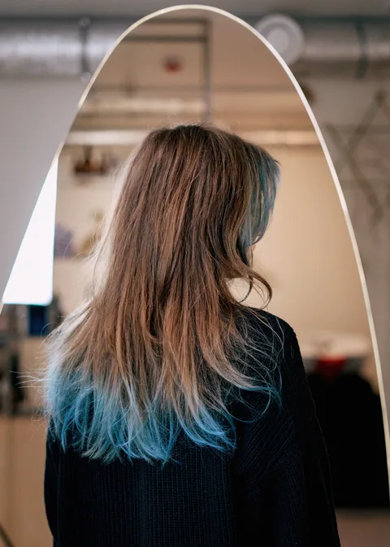

Фарбування волосся
Не знаєте, що вам підійде і скільки це коштуватиме? Надішліть фото волосся в Telegram, і майстер підкаже техніку та орієнтовну ціну.
Надіслати фото в Telegram
вул. Богдана Хмельницького 94, центр Києва
Відповідаємо щодня з 10:00 до 21:00

Привіт! Хочу освіжити колір, кінчики вже вимились. Ось як зараз
Перукарня ВалентинаПривіт! Можна оновити кінчики або зробити пасма в тому ж відтінку. Орієнтовно 1 500–4 500 грн, точніше скажемо на консультації. Коли вам зручно зайти?
Приклад переписки